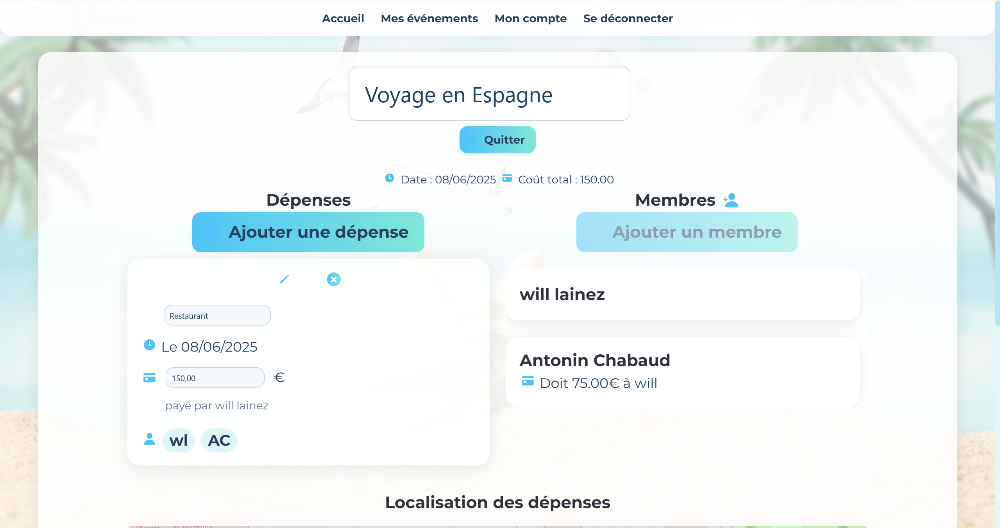

Liens
À propos de moi
Passionné par le développement logiciel, je conçois des logiciels, des applications mobiles et des sites web. Je dirige également une micro-entreprise spécialisée dans la conception et la vente de claviers personnalisés, ce qui reflète mon esprit entrepreneurial et ma passion pour la technologie. J'aime les défis qui me permettent d'enrichir mes compétences et de participer à des projets innovants.
Éducation
BUT Informatique
IUT Montpellier-Sète
2023-2026
Baccalauréat Général
Spé. Maths & Anglais
2023
Expertise
Je me spécialise dans la conception et le développement d'applications web et d'interfaces utilisateur, ainsi que dans la conception et la gestion de bases de données. J'ai de l'expérience dans l'administration de systèmes complexes de communication informatique, assurant des infrastructures fiables et efficaces.
J'ai également une expertise dans la conception et l'assemblage de claviers personnalisés, ainsi que dans la construction d'ordinateurs. Je suis également passionné par le développement de jeux vidéo et la composition musicale.
Locuteur natif français, connaissance de l'anglais au niveau B2. Titulaire d'un permis de conduire valide.
Langages
C#
Python
Java
C
SQL & PLSQL
JavaScript
PHP
Lua
Expérience
PicoKeebs.fr
PicoKeebs est mon entreprise spécialisée dans la construction de claviers personnalisés, y compris des claviers MIDI pour les musiciens. J'ai développé la boutique en ligne moi-même en utilisant PHP et je conçois chaque clavier du PCB au boîtier. Mon objectif est de fournir des produits uniques, de haute qualité qui combinent esthétique, performance et fonctionnalité pour les passionnés de technologie et de musique.
C4W.com
J'ai effectué un stage de 3 mois chez C4W du 13 janvier au 5 avril 2024. C4W est une entreprise de développement logiciel spécialisée dans les solutions de CAO (Conception Assistée par Ordinateur) pour le domaine médical. Lors de mon stage, j'ai acquis une expérience pratique dans le développement de solutions logicielles personnalisées pour des applications médicales.
Apprentissage
Présentation des compétences développées
Dans le cadre du Bachelor Universitaire de Technologie (BUT) Informatique, parcours Réalisation d’Applications : Conception, Développement, Validation (RACDV), le développement des compétences s’organise selon un référentiel national structuré par niveaux. Au semestre 4, certaines compétences atteignent un niveau 2, correspondant à un degré d’autonomie et de maîtrise intermédiaire, en lien direct avec des mises en situation professionnelles.
Le présent portfolio s’articule autour de trois compétences de niveau 2, qui sont présentées ci-dessous, chacune accompagnée de ses apprentissages critiques (AC) et de ses composantes essentielles (CE) associées.
Développer
Réaliser un développement d'application
| AC1 | Élaborer et implémenter les spécifications fonctionnelles et non fonctionnelles à partir des exigences |
| AC2 | Appliquer des principes d'accessibilité et d'ergonomie |
| AC3 | Adopter de bonnes pratiques de conception et de programmation |
| AC4 | Vérifier et valider la qualité de l'application par les tests |
Optimiser
Optimiser des applications informatiques
| AC1 | Choisir des structures de données complexes adaptées au problème |
| AC2 | Utiliser des techniques algorithmiques adaptées pour des problèmes complexes (ex. : optimisation, IA…) |
| AC3 | Comprendre les enjeux et moyens de sécurisation des données et du code |
| AC4 | Évaluer l'impact environnemental et sociétal des solutions proposées |
Vérifier
3. Vérifier et valider une application
| AC1 | Identifier les types de tests adaptés à une situation donnée |
| AC2 | Construire des jeux d'essai et automatiser les tests |
| AC3 | Interpréter les résultats pour valider ou corriger les implémentations |
| AC4 | Documenter et formaliser les procédures de validation |
Ces compétences constituent les fondations du parcours RACDV, en articulant conception rigoureuse, programmation efficace et validation méthodique. Elles sont au cœur des exigences du BUT Informatique, et leur acquisition progressive est au centre de l’évaluation du semestre 4.
Projets
Découvrez une sélection de mes projets mettant en avant des efforts de groupe et personnels, principalement de mon temps à l'IUT. Chaque projet met en lumière des défis uniques et des opportunités d'apprentissage. Cliquez sur "Voir les détails" pour explorer davantage.
Avr 2025
-
Juin 2025
SAE – Very Bad Split: Application Web de Gestion Financière d'Événements
Une application full-stack de budgétisation d'événements développée en PHP (MVC-S), améliorée avec une bibliothèque de réactivité JavaScript personnalisée et une API REST. Les utilisateurs peuvent créer des événements, inviter des membres, enregistrer des dépenses et calculer automatiquement les soldes de dettes basés sur la participation individuelle aux dépenses partagées. Le projet est issu d'une application défectueuse avec des failles de sécurité, une base de données à table unique et aucune séparation des préoccupations. Nous avons complètement restructuré et reconstruit le système.
Contexte du projet : L'application originale n'avait aucune architecture, était truffée de vulnérabilités et utilisait une base de données qui n'était même pas en Première Forme Normale. Le défi était d'auditer, de refactoriser et de sécuriser le code, de normaliser la base de données étape par étape et de moderniser l'interface avec de la réactivité et des appels d'API asynchrones.
Mon rôle et responsabilités : J'ai analysé et documenté les failles de sécurité (SQLi, XSS, authentification faible), redessiné et normalisé le schéma de la base de données en 3NF avec justification, implémenté les services principaux de l'application et les points de terminaison de l'API en PHP, et développé la couche de réactivité en JavaScript pour rendre l'UI entièrement interactive sans rechargement de page. J'ai également participé à la virtualisation du projet en utilisant Docker Compose.
Technologies utilisées : PHP (MVC-S), JavaScript, bibliothèque réactive personnalisée, MySQL, Docker, Docker Compose, API REST, Twig, AJAX.
Compétences développées :
- Audité la qualité et la sécurité de l'application, puis proposé et appliqué des améliorations structurelles (AC3).
- Reconstruit un modèle de base de données en appliquant la normalisation (1NF → 3NF) avec des décompositions documentées (AC1).
- Implémenté une architecture back-end sécurisée et une API REST avec authentification JWT (AC3, CE1.06).
- Créé une interface utilisateur dynamique avec une couche JavaScript réactive personnalisée et consommation d'API (AC2, AC4).
- Appliqué l'architecture MVC-S et introduit des services modulaires et des tests unitaires avec PHPUnit (AC3, AC4).
- Utilisé Docker et Docker Compose pour la virtualisation complète des services et la cohérence de l'environnement (CE1.06).
Points clés à retenir : Ce projet a été une plongée profonde dans les pratiques professionnelles de refactorisation. Il a renforcé mes compétences en qualité de code, sécurité, modélisation de bases de données, conception d'API, découplage frontend/backend et déploiement de projets full-stack par conteneurisation.
Capture d'écran de l'interface principale de l'application Very Bad Split reconstruite.
Avr 2025
-
Juin 2025
Skull – Jeu de Bluff 3D en Ligne
Un remake 3D du jeu de société Skull, jouable dans le navigateur, créé juste après mon stage en réutilisant et en étendant les technologies que j'avais apprises. Le jeu met l'accent sur la stratégie et les mécaniques de bluff, le tout dans une architecture moderne et évolutive.
Contexte du projet : Ce projet solo a été conçu comme une version multijoueur en ligne et entièrement en 3D du jeu Skull, un jeu stratégique de bluff et de pari. L'objectif était de reproduire fidèlement le gameplay tout en expérimentant une architecture moderne front-end/back-end.
Mon rôle & responsabilités : J'ai développé l'ensemble du front-end en React avec Three.js pour le rendu 3D, et l'ai stylisé avec Tailwind CSS. Le back-end a d'abord été prototypé en TypeScript, puis entièrement réimplémenté en Java en utilisant une architecture hexagonale afin d'assurer un couplage faible et une bonne testabilité. J'ai conçu la logique métier selon les principes SOLID pour garantir la scalabilité et la clarté du code.
Technologies utilisées : React, Three.js, Tailwind CSS, TypeScript, Java, Architecture hexagonale, WebSocket (pour la communication en temps réel).
Compétences développées :
- Réutilisation des technologies acquises en stage dans un nouveau contexte projet pour renforcer mon apprentissage (AC1).
- Application de frameworks front-end modernes et de moteurs 3D pour créer une expérience utilisateur interactive et immersive (AC2, CE1.03).
- Conception d’un back-end modulaire avec une logique métier claire, basé sur l’architecture hexagonale et les principes SOLID (AC3, CE1.06).
- Validation du système par des tests de composants et le débogage en temps réel du gameplay (AC4).
Points clés retenus : Ce projet m’a permis de consolider les concepts d’architecture découverts pendant mon stage, d’approfondir ma maîtrise du rendu 3D pour le web, et d’explorer des schémas de conception back-end avancés en Java.

Capture d’écran d’une partie de Skull en cours, rendue en 3D avec Three.js.
Jan 2025
-
Mar 2025
Smile.Web – Application Web 3D pour le Traitement Orthodontique
Une application web 3D de pointe développée lors de mon stage chez C4W. Construite avec React, Three.js et Rapier, cette application est conçue pour aider les orthodontistes à visualiser et planifier les traitements dentaires. Elle facilite également la communication entre les praticiens et les laboratoires dentaires grâce à une interface collaborative.
Contexte du projet : L'objectif était de créer un outil avancé de visualisation et d'édition pour les traitements orthodontiques. Les praticiens peuvent interagir avec des modèles dentaires 3D précis, définir les étapes de traitement et collaborer avec les laboratoires en temps réel.
Mon rôle et responsabilités : J'ai développé l'interface d'édition de traitement en utilisant React, intégré la visualisation 3D avec Three.js et implémenté des algorithmes complexes pour la détection automatique de collisions entre les maillages 3D. J'ai également travaillé sur l'amélioration de l'ergonomie de l'UI/UX pour assurer la clarté et la facilité d'utilisation pour les professionnels dentaires.
Technologies utilisées : React, Three.js, Rapier, CSS Modules.
Compétences développées :
- Implémenté des spécifications fonctionnelles et non fonctionnelles en collaboration avec les parties prenantes (AC1).
- Appliqué des algorithmes 3D avancés pour détecter et résoudre les collisions de maillages automatiquement (AC2, CE1.03).
- Respecté les principes d'ergonomie et d'accessibilité pour optimiser l'expérience utilisateur (AC2).
- Adopté des pratiques de code modulaire et évolutif en React, suivant les principes de qualité logicielle (AC3, CE1.06).
- Intégré des boucles de rétroaction visuelle en temps réel pour valider la détection de collision et la logique d'édition (AC4).
Points clés à retenir : J'ai approfondi mon expertise en graphismes 3D dans un contexte web, renforcé ma capacité à concevoir des interfaces utilisateur ergonomiques et relevé des défis algorithmiques dans une application médicale de qualité professionnelle. Cette expérience a également renforcé ma compréhension des flux de travail de développement professionnel et de la communication client.
Démonstration en direct : Accéder au visualiseur Smile.Web
Capture d'écran de l'interface d'édition de traitement Smile.Web.
Aperçus visuels de l'algorithme de détection de collision automatique entre les maillages dentaires.
Jan 2025
Silent Or Boom – Jeu 2D sur Pico-8
Un jeu 2D amusant et stimulant développé lors de la Code Game Jam 2025 en utilisant Lua et Pico-8, avec des contraintes de performance strictes et une palette de couleurs limitée. Le jeu met en scène un personnage qui utilise de la TNT pour collecter des ressources et vaincre des vagues de monstres, le tout codé à partir de zéro en seulement 24 heures.
Contexte du projet : Ce projet a été développé en solo lors de la Code Game Jam 2025. L'objectif était de créer un jeu captivant et amusant dans les contraintes de la console fantaisie Pico-8, qui inclut une palette de couleurs limitée et des restrictions de performance strictes.
Mon rôle et mes responsabilités : J'ai conçu et implémenté l'ensemble du jeu en utilisant Lua dans l'environnement Pico-8. Cela comprenait la création des mécaniques de jeu à partir de zéro, comme la gravité, les explosions de TNT, et un algorithme de génération de niveaux aléatoires utilisant des automates cellulaires. Le jeu a été développé en utilisant des principes de programmation orientée objet pour assurer un code propre et efficace.
Technologies utilisées : Lua, Pico-8, Programmation Orientée Objet.
Compétences développées :
- Conçu et implémenté des spécifications fonctionnelles et non fonctionnelles à partir des exigences (CL1).
- Appliqué des techniques algorithmiques pour des problèmes complexes, comme la génération procédurale de niveaux (CL2).
- Adopté de bonnes pratiques de conception et de programmation pour assurer la qualité et la performance du code dans des contraintes serrées (CL3).
- Vérifié et validé la qualité de l'application par des tests et le débogage en temps réel du gameplay (CL4).
- Optimisé le jeu pour qu'il fonctionne efficacement dans les ressources limitées de Pico-8, assurant une expérience fluide pour le joueur (Optimize CL1, CL2).
Points clés à retenir : Ce projet m'a permis de repousser ma créativité et mes compétences techniques en développant un jeu complet dans un délai très court et sous des contraintes significatives. Il a renforcé ma capacité à concevoir des algorithmes efficaces et à optimiser le code pour la performance, tout en améliorant ma compréhension des mécaniques de jeu et de l'engagement des joueurs.
Bande-annonce :
Sept 2024
-
Déc 2024
SAE 3A - Application Web pour le Suivi Académique des Étudiants
Une application web complète développée en PHP et MySQL pour rationaliser le suivi académique des étudiants. Ce projet a amélioré mes compétences en développement web et en optimisation de bases de données tout en mettant l'accent sur l'importance de la conception centrée sur l'utilisateur. L'objectif principal était d'appliquer la méthodologie Agile, qui comprenait l'organisation des tâches sur Trello, la réalisation de sprints et la collaboration avec un client par le biais de revues de sprint.
Contexte du projet : Conçue pour faciliter la gestion des dossiers étudiants, le suivi des notes et la vérification de l'éligibilité aux programmes académiques. Les pratiques Agile étaient au cœur de ce projet, nous aidant à développer et à affiner l'application de manière itérative en fonction des retours des clients lors des revues de sprint.
Mon rôle et responsabilités : J'ai implémenté le schéma de la base de données, optimisé les requêtes et développé le front-end et le back-end en suivant le modèle MVC. J'ai également activement contribué à la planification des sprints et à la gestion des tâches sur Trello.
Technologies utilisées : PHP, MySQL et JavaScript pour l'interactivité front-end.
Compétences développées :
- Formalisé les exigences des clients et des utilisateurs et implémenté les spécifications fonctionnelles et non fonctionnelles (AC11).
- Conçu et optimisé les schémas de bases de données relationnelles pour une gestion efficace des données (CE1.06).
- Implémenté une logique back-end sécurisée et évolutive en utilisant PHP et MySQL (AC3).
- Appliqué les principes d'accessibilité et d'ergonomie pour créer une interface conviviale (AC2).
- Adopté les meilleures pratiques de codage et de documentation pour assurer la maintenabilité (C21.04).
- Validé la qualité de l'application par des tests rigoureux (AC3).
- Organisé la récupération et la présentation des données en utilisant des pages web dynamiques et l'intégration de bases de données (CE1.03).
- Optimisé les requêtes et les structures de bases de données pour gérer des données à grande échelle (AC1).
Points clés à retenir : Amélioré ma compréhension de la conception d'applications web évolutives, optimisé les opérations de bases de données pour les grands ensembles de données et acquis une expérience pratique des flux de travail Agile tels que la planification des sprints, la priorisation des tâches et le développement itératif.

Août 2024
-
Sept 2024
Projet Personnel - Terraria-Like en C
Un projet solo passionnant inspiré de Terraria, où j'ai construit un jeu avec une génération de monde procédurale utilisant des automates cellulaires. Ce voyage a approfondi ma compréhension de l'optimisation, de la gestion de la mémoire et de la conception algorithmique.
Contexte du projet : Axé sur la mise en œuvre de la génération de terrain aléatoire et du gameplay inspiré des mécaniques de bac à sable de Terraria.
Mon rôle et responsabilités : Développé la logique principale du jeu, implémenté la génération procédurale utilisant des automates cellulaires et optimisé la gestion des ressources.
Technologies utilisées : C, Raylib et des algorithmes personnalisés pour une génération de monde efficace.
Compétences développées :
- Conçu et implémenté des algorithmes avancés pour la génération de terrain (CE1.03).
- Optimisé l'utilisation de la mémoire pour la gestion de grands ensembles de données (AC3).
- Choisi et utilisé des ressources techniques appropriées pour le rendu graphique et les mécaniques de jeu (CE1.06).
- Adopté les meilleures pratiques pour la qualité du code et la documentation (C21.04).
- Développé des solutions évolutives en appliquant les principes de complexité algorithmique et d'optimisation des structures de données (AC1).
- Renforcé la compréhension de l'accessibilité et de l'ergonomie à travers la conception de gameplay (AC2).
- Testé et validé la fonctionnalité de l'application par des cycles de développement itératifs.
Points clés à retenir : Amélioré mes compétences en programmation C, en particulier en résolution de problèmes algorithmiques et en code efficace en mémoire.
Mai 2024
-
Juin 2024
SAE Train - Jeu de Plateau et de Cartes
Un projet de groupe dynamique dans lequel j'ai développé un jeu de plateau et de cartes en Java, intégrant une conception orientée objet et une interface conviviale. Ce projet a réuni créativité et expertise technique pour créer une expérience de jeu captivante.
Contexte du projet : L'objectif était de simuler un jeu de plateau et de cartes, incorporant des fonctionnalités comme la gestion du paquet de cartes, l'exécution d'actions et les mécaniques de placement de rails.
Mon rôle et responsabilités : Conçu l'architecture du système, implémenté l'interface du jeu et assuré des mécaniques fluides pour les interactions entre le paquet et le plateau.
Technologies utilisées : Java, JavaFX, développement piloté par les tests et structures de données avancées.
Compétences développées :
- Appliqué les principes algorithmiques pour implémenter les mécaniques de jeu (CE1.03).
- Assuré le respect des normes de qualité et de documentation du code (C21.04).
- Choisi des ressources techniques appropriées pour une implémentation efficace (CE1.06).
- Conçu et implémenté des spécifications fonctionnelles et non fonctionnelles à partir des exigences (AC11).
- Adopté les meilleures pratiques pour la conception, la programmation et les tests afin de valider la qualité de l'application.
- Utilisé des structures de données complexes pour résoudre des problèmes (AC1).
- Amélioré la compréhension des principes de sécurité des données et du code (AC3).
- Souligné les principes de conception d'accessibilité et d'ergonomie (AC2).
Points clés à retenir : Renforcé la maîtrise de Java et acquis une expérience précieuse dans la création d'applications évolutives et pilotées par les tests.

Loisirs
Programmation, Code Game Jam, claviers personnalisés, matériel informatique, musique, badminton, voyage.
Contact
Vous pouvez me contacter directement par email à
antonin.chabaud-pech@etu.umontpellier.fr
Sinon, n'hésitez pas à utiliser le formulaire de contact ci-dessous pour me contacter.
Citations
Voici une citation aléatoire pour vous à méditer avant de partir :
« Un bug n'est pas une erreur, c'est une fonctionnalité non découverte. »
Douglas Adams
Signature
Merci pour votre visite !
Je suis toujours enthousiaste à l'idée de collaborer sur des projets innovants et de relever de nouveaux défis. N'hésitez pas à me contacter si vous souhaitez échanger ou discuter d'une idée !